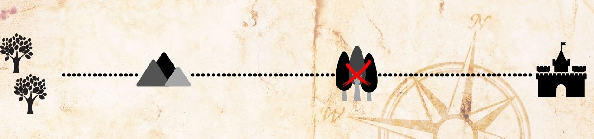

Apesar da noite tensa, os elfos liderados por Finwe conseguem chegar ao outro lado da montanha em segurança. Quando alcançam a Velha Floresta, eles encontram Ents, árvores gigantes e falantes. Finwe deve pedir ajuda as Ents para cruzar a Velha Floresta para o Oeste?
1 – Não pedir ajuda aos Ents.
2 – Pedir ajuda aos Ents.

2 – Pedir ajuda aos Ents.